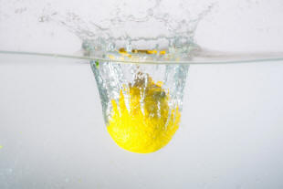

Stative and Dynamic verb uses: the essentials

The distinction |
There is a fundamental and important distinction in English between stative and dynamic uses of verbs. In many texts, you will see them referred to as 'dynamic' or 'action' verbs or 'state' or 'event' verbs. This is misleading because it is not the verb itself that is stative or dynamic, it's the use to which it is put.
 |
Look at these examples and try to identify which verbs describe an
action and which describe a state. Click here for comments when you have done that. |
|
|
Verbs usually with dynamic use (i.e., those which describe an action, not a state) are:
-
Verbs which describe processes such as
become, worsen, slow
down etc.
Sentence 6 contains the example grow. -
Verbs which describe sensation such as hurt, itch, agonise
etc.
Sentence 7 contains the example hurt. -
Verbs which describe activities or sudden actions such as read, write, hit, work,
drink etc.
Sentence 3 contains the example read and Sentence 9 contains the example tap. -
Verbs which describe a change such as die, depart etc.
Sentence 8 contains the example arrive.
Verbs with stative use (i.e., those which describe passive states, not actions) are:
- Verbs of perception such as perceive, hear, imagine, dislike
etc.
Sentence 2 contains the example is.
Sentence 4 contains the example astonish.
Sentence 7 contains the example hurt. - Verbs which describe feelings, opinions and preferences such as
like, love, adore, enjoy, prefer etc.
Sentence 10 contains the example love. - Verbs which describe relationships between things / people such
as cost, need, own, sound, seem etc.
Sentence 5 contains the example belong.
Notice that Sentence 7
occurs in both lists. The distinction between perception and
sensation is blurred. We can have
My foot is hurting
as well as
My foot hurts.
One sentence has not been mentioned and this gives the clue to why
this areas matters so much to learners of the language.
Look at Sentences 1 and 2.
In Sentence 2, the verb
to be is used normally.
It usually refers to a state or condition, not an action.
In Sentence 1, on the other hand, it has the unusual
meaning of an action – behaving.
The reason why we are being careful in
this guide to refer to stative and dynamic uses of verbs rather than stative
and dynamic verbs is that almost all verbs which are generally
stative can be used dynamically.
Here's the usual list:
- Verbs of possession or relations between things

- This list will include verbs such as
be, appear, consist, contain,
cost, have,
depend, fit, include, involve,
matter, mean, measure, owe, own, possess,
seem, weigh and
so on. So we get, e.g.:
It weighs three pounds (not is weighing)
The jacket doesn't fit me (not isn't fitting) - Verbs of sensations

- This list will include feel,
hear, look, see, smell, sound, taste, touch. So we get,
e.g.:
It tastes delicious (not is tasting)
That smells awful (not is smelling) - Verbs referring to emotional states

- This list includes adore,
appreciate, care, desire, dislike, hate, hope, like, love, mind,
need, prefer, value, want, wish. So we get, e.g.:
I appreciate your time (not am appreciating)
I love the summer (not am loving) - Verbs referring to mental processes and states

- This is a longer list and includes
agree, astonish, believe, concern, deny, disagree,
doubt, expect, flabbergast, forget, imagine, impress, know,
please, promise, realise, recognise, remember, satisfy, suppose,
surprise, think, understand. So we get, e.g.:
I deny taking it (not am denying)
I recognised her at once (not was recognising)
But, of course, many of these verbs are routinely used
dynamically so we get, for example:
From the first list:
I am depending on you
The work is costing a small fortune
It's weighing on my mind
From the second list:
Am I hearing things?
I'm feeling a bit sick
She's looking ill
From the third list:
I'm hating it
He's loving the attention
She's hoping it will rain
From the fourth list
At least we're agreeing about something
I was imagining something a bit grander
I'm thinking about taking a few days off
etc.
and because the verbs can be used dynamically, it makes little sense
to tell learners that some verbs are stative and others dynamic
because that can easily lead to error (teacher-induced error, in
fact).
By the way, on some websites, you may find the distinction
between verbs used dynamically and those used statively to be in the
fact that an action or state is either voluntary or involuntary.
So, for example:
She looks beautiful
is categorised as involuntary so has the simple form, whereas:
She is looking at the map
is classified as voluntary so has the progressive form.
There is a small amount of sense in this although such an arbitrary
division soon breaks down when we consider:
I think he's an idiot
which is clearly a voluntary state with a stative use and
The car is sounding strange
which is clearly involuntary but dynamic in use.
The division become seven less helpful when we consider:
She is looking beautiful
because that is a dynamic use for what may be an involuntary
state.
The voluntary-involuntary division is, therefore unsustainable and
not recommended as a way of explaining the differences to learners.
 |
Tenses |
What do you notice about the tense forms in these sentences? Click here when you see it.
Verbs which are used dynamically can take the progressive aspect;
those used statively cannot.
We do not usually say:
I am understanding
I'm not wanting
It isn't
mattering
I am remembering
unless we want to give a special
meaning to the verbs. Compare the following:
| Stative use | vs. | Dynamic use | Difference |
| I think it's him | vs. | I'm thinking of him | believe vs. consider |
| It costs a lot | It is costing a lot | fixed price vs. ongoing price | |
| I don't care for jazz | I am caring for her cat | like vs. look after | |
| I wish I could come | I'm wishing on a star | want vs. hope | |
| It depends on how much | I'm depending on you | vary vs. rely | |
| I hoped she would come | I was hoping she would come | want vs. hope | |
| I forgot her name | I was forgetting the tax | fail to remember vs. fail to consider | |
| I valued her advice | She was valuing the house at the time | appreciated vs. assess price | |
| It sounds a bit like a church bell | The story was sounding more and more unlikely | resemble vs. become |
 |
Teaching issues |
Think about the implication for teaching, make a few notes and then click here for some comments.
- When we introduce a verb students will assume it can be used in both ways unless we make it clear.
- We need to make sure we talk about stative and dynamic uses of verbs and not tell people that some verbs are only one or the other.
- When teaching the progressive aspects of tenses, we need to bear this distinction in mind at all times.
- We need to be aware that many languages do not make this distinction (often because they don't use the same sort of aspect structures) so it is not an easy concept to grasp.
You may have thought of others. Good if you did.
Aspect |
The distinction between stative and dynamic uses is explicable by
looking at aspect across languages. Aspect refers to the way the
speaker perceives an event or state in relation to time. Is it
continuous, ongoing, finished etc.?
For example, in many languages there is only one verb for recognise
and know. The distinction between the meanings will often
be made by reference to the aspect of the verb: the perfective (finished
action) form for the sense of I knew him at once and the
imperfective (unfinished state) for the sense of I was acquainted
with him.
It is also possible to explain the difference between It costs
a lot (continuous, steady-state) and It is costing a lot
(progressive action) with reference to aspects of the verb.
| Related guides | |
| verbs index | for the links to related areas |
| tense and aspect | for the essential guide to two related concepts |
| what verbs do | for a run-down of the functions of verbs |
| verb types and clause structures | for a much more technical guide which includes consideration of stative and dynamic verb use |